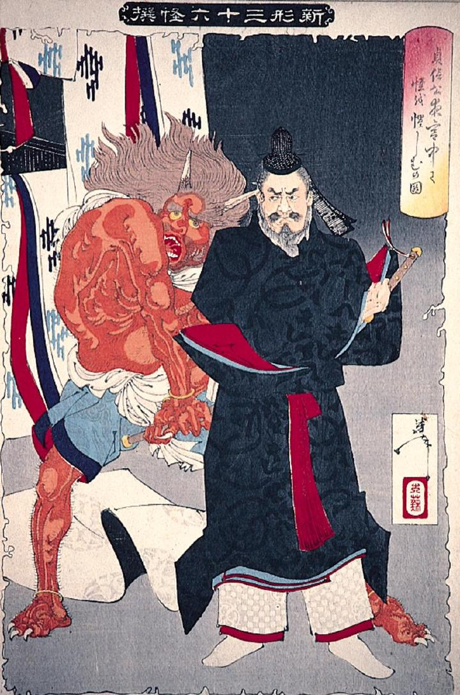

藤原忠平に押さえ込まれる赤鬼。2本の角が生え、頭髪は長く逆立っている。苦悶の表情を浮かべながら忠平の刀剣を握り締めている。
著作者：月岡芳年／出典：親書誌：A80_prague_0010：貞信公夜宮中で怪を懼しむの図；テイシンコウヨルキュウチュウデモノノケヲアヤシムノズ／日付：2011／資源識別子：A80_prague_0010_0001_0000
Copyright (c)2010- International Research Center for Japanese Studies, Kyoto, Japan. All rights reserved.